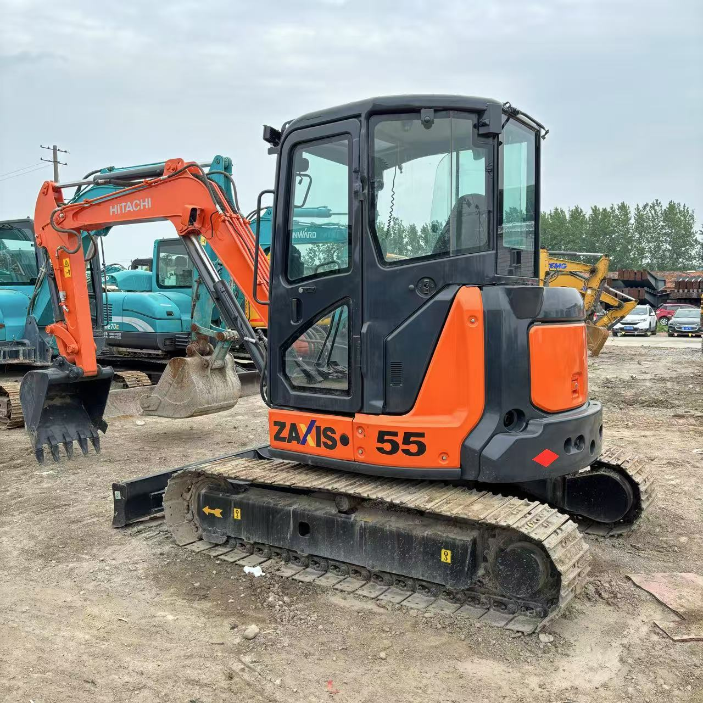

Refurbished Hitachi Zaxis 55 Excavator
The Hitachi Zaxis 55 Excavator is a powerful, compact machine designed for small to medium-sized projects that require high efficiency, precision, and versatility. Whether you're working in construction, landscaping, or material handling, the Zaxis 55 offers the perfect combination of power and maneuverability for jobs in tight spaces. Known for its durability, fuel efficiency, and smooth operation, the Zaxis 55 is ideal for projects where larger excavators would struggle to operate. A refurbished Zaxis 55 provides the same reliable performance as a new unit, but at a significantly lower price point, making it a smart choice for businesses and contractors looking to maximize their investment.
Honestly, it's almost impossible to buy a brand new excavator from China. They either don't exist or are made in China. If a Chinese seller tells you their Caterpillar/Komatsu/Volvo/Kobelco/Hitachi is brand new, they're lying. Therefore, a refurbished excavator is your best bet.

Here are the detailed specifications for a refurbished Hitachi Zaxis 55 excavator (ZX55U-5A or ZX55UR):
Operating Weight and Dimensions
- Operating Weight: ~5,300–5,500 kg
- Transport Length: ~5.5 meters
- Transport Width: ~1.96 meters
- Transport Height: ~2.55 meters
- Tail Swing Radius: ~1.1–1.3 meters (zero or ultra-short tail swing)
- Track Width: 400 mm standard
- Undercarriage: Fixed gauge, rubber or steel tracks
Engine and Powertrain
- Engine Model: Yanmar 4TNV88 or Isuzu 4LE2X (Tier 3 compliant)
- Rated Power Output: ~28.4 kW (38 hp) @ 2,400 rpm
- Fuel Tank Capacity: ~70 liters
- Travel Speed:
- Low: ~2.2 km/h
- High: ~4.0 km/h
- Swing Speed: ~9.0 rpm
- Drive Type: Hydrostatic with planetary final drives
Hydraulic System
- Main Pump Type: Load-sensing axial piston pumps
- Flow Rate: ~2 × 60–70 L/min
- System Pressure: Up to 24.5 MPa
- Hydraulic Oil Capacity: ~60–70 liters
- Efficiency Features:
- Boom/swing priority
- Regeneration circuits
- Auto hydraulic warm-up
- Fuel-saving ECO mode
Performance Metrics
- Bucket Capacity: ~0.18–0.22 m³ (SAE heaped)
- Max Digging Depth: ~3.8 meters
- Max Reach (Horizontal): ~5.9 meters
- Max Dump Height: ~4.0 meters
- Bucket Digging Force: ~43–45 kN
- Arm Digging Force: ~28–30 kN
Cab and Operator Features
- Cab Type: ROPS/FOPS certified
- Display: LCD monitor with diagnostics and fuel tracking
- Controls: Pilot-operated joysticks with auxiliary hydraulic circuit
- Comfort: Adjustable seat, optional HVAC, low-noise cab
- Visibility: Wide glass area, LED work lights
Attachments Compatibility
- Standard Bucket: ~0.2 m³
- Optional Tools: Hydraulic breaker, auger, compactor, ripper
- Quick Coupler: Manual or hydraulic options available
- Dozer Blade: Standard for grading and stability
Refurbishment Scope
Refurbished ZX55 units typically include:
- Engine Overhaul: Turbocharger, injectors, cooling system
- Hydraulic Restoration: Pump recalibration, valve block testing, hose replacement
- Electrical Diagnostics: Monitor, sensors, wiring harness
- Cab Reconditioning: Seat, joysticks, HVAC, repainting
- Structural Repairs: Boom/bucket welding, bushing replacement, undercarriage rebuild
Overview of the Hitachi Zaxis 55 Excavator
The Hitachi Zaxis 55 is a compact, tracked hydraulic excavator designed to deliver exceptional performance on small and medium-sized job sites. Its compact size allows it to work in confined spaces while still providing ample digging depth and reach. The Zaxis 55 is equipped with a reliable engine and hydraulic system that ensures smooth operation, fast cycle times, and high productivity.
When refurbished, the Zaxis 55 goes through a rigorous reconditioning process, where worn components are replaced with genuine Hitachi parts, and the machine is restored to factory specifications. This makes a refurbished Zaxis 55 a cost-effective solution for businesses looking for high-performance machinery without the new model price tag.
Key Specifications of the Hitachi Zaxis 55 Excavator
The Zaxis 55 offers a perfect blend of power, size, and efficiency, making it suitable for various applications. Below are the key specifications:
-
Operating Weight: Approximately 5,500 - 6,000 kg (12,125 - 13,227 lbs)
-
Engine Power: 50 hp (37 kW)
-
Max Digging Depth: Up to 4.2 meters (13.8 feet)
-
Maximum Reach: 6.2 meters (20.3 feet)
-
Bucket Capacity: Typically 0.2 - 0.3 cubic meters (7.1 - 10.6 cubic feet)
-
Fuel Tank Capacity: Around 85 - 100 liters (22 - 26 gallons)
-
Travel Speed: Up to 5.5 km/h (3.4 mph)
These specifications make the Zaxis 55 an ideal machine for light to medium-duty projects, offering good reach and digging depth while maintaining efficiency and maneuverability on tight job sites.
Performance and Efficiency of the Zaxis 55
The Zaxis 55 is designed to provide optimal performance while maximizing fuel efficiency. Its advanced hydraulic system and powerful engine ensure smooth operation, fast cycle times, and high productivity.
Performance Highlights:
-
Efficient Hydraulic System: The Zaxis 55 is equipped with a highly efficient hydraulic system that allows for smooth and precise control of the boom, arm, and bucket. This system reduces cycle times, increases productivity, and ensures the excavator is capable of handling demanding tasks with ease.
-
Fuel Efficiency: Fuel consumption is minimized with the Zaxis 55’s efficient engine design. It delivers high power while keeping fuel costs low, making it an excellent choice for businesses aiming to reduce operating expenses without sacrificing performance.
-
Compact but Powerful: Despite its smaller size, the Zaxis 55 offers impressive digging depth and reach, making it suitable for a range of applications such as trenching, material handling, and landscaping. Its small footprint also allows it to operate in spaces where larger machines cannot.
-
Responsive Controls: The Zaxis 55 offers precise control with its well-designed joystick controls, allowing operators to perform tasks with accuracy and ease. The responsive hydraulic system ensures smooth operation for tasks that require precision.
Durability and Longevity of the Zaxis 55
Hitachi is known for its durable construction equipment, and the Zaxis 55 is no exception. Built with high-quality materials and engineered for long-term performance, this excavator is designed to withstand the rigors of tough working conditions and deliver reliable service for years.
Durability Features:
-
Sturdy Undercarriage: The undercarriage of the Zaxis 55 is designed for long-lasting performance, even in tough environments. The tracks, rollers, and sprockets are engineered to withstand heavy loads and rough terrain, ensuring smooth operation even on uneven ground.
-
Long-Lasting Engine: Powered by a reliable engine, the Zaxis 55 can provide thousands of hours of service with proper maintenance. This ensures that the machine continues to perform at its best, even after years of operation.
-
Robust Hydraulic System: The hydraulic system of the Zaxis 55 is designed for durability and can handle high-pressure applications. The system’s components are built to last, minimizing downtime and ensuring smooth operation over the long term.
Comfort and Safety of the Zaxis 55
The Zaxis 55 is designed with the operator’s comfort and safety in mind. It features an ergonomic cabin, advanced safety systems, and noise and vibration reduction features to enhance the operator’s experience during long shifts.
Comfort and Safety Features:
-
Ergonomic Cabin: The cabin of the Zaxis 55 is spacious and equipped with an adjustable seat and easy-to-use controls. The large windows provide excellent visibility, which is essential for safe and efficient operation, especially in tight spaces.
-
Noise and Vibration Reduction: The Zaxis 55 incorporates noise and vibration reduction technology in the cabin, ensuring a quieter and more comfortable working environment. This feature reduces operator fatigue, making it easier to stay focused on the job for extended hours.
-
Safety Features: The Zaxis 55 comes with Roll Over Protection (ROPS) and Falling Object Protection (FOPS) to safeguard the operator in hazardous work environments. The machine’s low center of gravity improves stability, making it safer to operate on uneven or sloped terrain.
Versatility and Attachments for the Zaxis 55
The Zaxis 55 is highly versatile and can be fitted with a variety of attachments to meet the demands of different applications. Whether you need to dig, grade, lift, or demolish, the Zaxis 55 can be equipped with the appropriate tools for the job.
Common Attachments for the Zaxis 55:
-
Buckets: The Zaxis 55 can be fitted with general-purpose, heavy-duty, or grading buckets. These typically range from 0.2 to 0.3 cubic meters (7.1 - 10.6 cubic feet), making them ideal for excavation, grading, and material handling tasks.
-
Hydraulic Breakers: For demolition or material removal tasks, the Zaxis 55 can be equipped with a hydraulic breaker, capable of breaking through concrete, rock, and other hard materials.
-
Augers: Auger attachments are perfect for drilling precise holes for foundations, posts, or other applications that require deep, narrow holes.
-
Grapples: The Zaxis 55 can be fitted with grapple attachments for lifting and handling materials such as logs, scrap metal, and debris.
-
Quick Couplers: Quick couplers allow operators to quickly and safely switch between attachments without needing to leave the operator’s seat, minimizing downtime and improving efficiency.
Benefits of Purchasing a Refurbished Hitachi Zaxis 55 Excavator
Opting for a refurbished Zaxis 55 offers several advantages for businesses, particularly those looking to save on costs without compromising on quality.
Key Benefits:
-
Cost Savings: Refurbished Zaxis 55 machines are considerably more affordable than new models. Refurbishment ensures that the machine is restored to near-new condition with genuine Hitachi components, offering high performance and reliability at a fraction of the cost.
-
Thorough Inspection and Reconditioning: Refurbished units go through a detailed inspection and reconditioning process to replace worn-out parts and ensure the machine operates as intended. This ensures the machine performs just like a new one.
-
Warranty: Many refurbished Zaxis 55 machines come with a warranty, offering peace of mind in case of any mechanical issues after purchase.
-
Sustainability: Purchasing refurbished equipment is an environmentally friendly choice. It helps extend the life of existing machinery and reduces waste, contributing to sustainability in the heavy equipment industry.
Maintenance Tips for the Hitachi Zaxis 55 Excavator
To ensure the Zaxis 55 continues to operate efficiently and last for many years, regular maintenance is essential. Below are some key maintenance tips:
Maintenance Recommendations:
-
Engine Maintenance: Regularly check and change the engine oil, replace air filters, and monitor coolant levels to prevent overheating and maintain optimal engine performance.
-
Hydraulic System: Inspect hydraulic hoses for leaks and replace hydraulic filters as needed. Keeping the hydraulic system in good condition ensures smooth operation and reliable performance.
-
Undercarriage: Regularly inspect the undercarriage, including tracks, sprockets, and rollers, for wear. Timely replacement of worn parts prevents further damage and ensures smooth operation.
-
Attachments: Check attachments like buckets and grapples for damage or wear. Replace or repair any parts that show signs of wear to maintain their functionality.
Conclusion
The Hitachi Zaxis 55 Excavator is a compact, powerful, and versatile machine that delivers exceptional performance for a wide range of applications. A refurbished Zaxis 55 offers a cost-effective way to obtain a high-quality machine that performs just like new, while saving money on the initial purchase. With proper maintenance, the Zaxis 55 will continue to provide reliable performance for many years, making it a great investment for any construction, landscaping, or material handling project.
Our Commitment
- 2 years / 4000 hours warranty.
- EPA certified.
- No sweatshop labor.
Contacts

- [email protected]
- Youtube Instagram Facebook
- Navigation: G206 (Sishu Bridge) in Changfeng County, Hefei City, Anhui Province, 200 meters north to the east